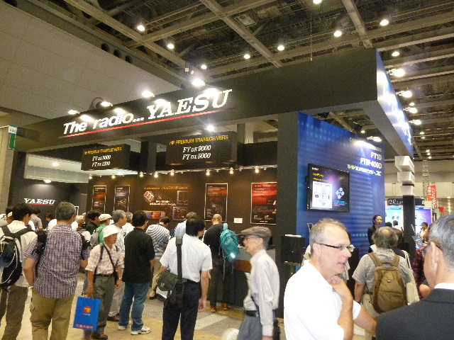
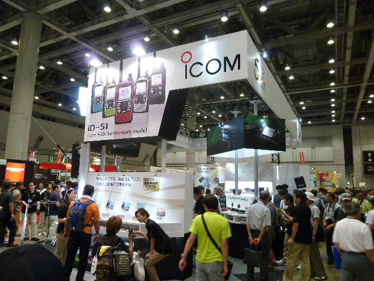
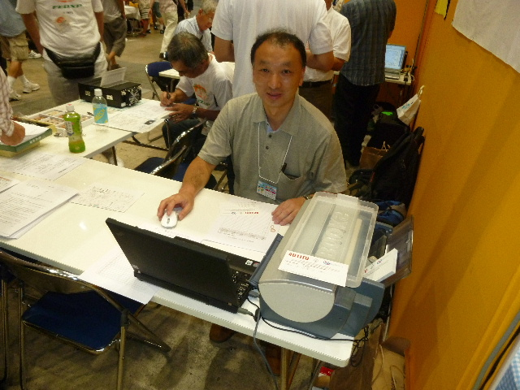
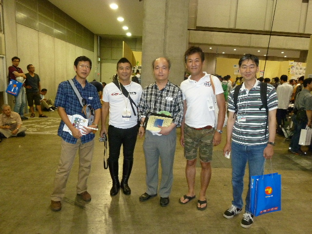
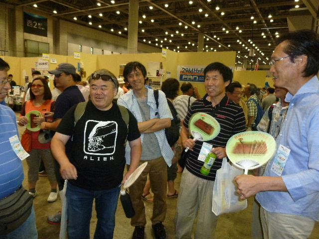
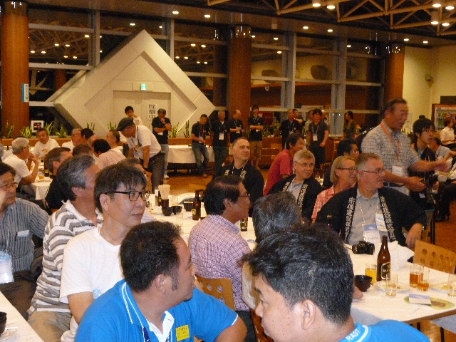
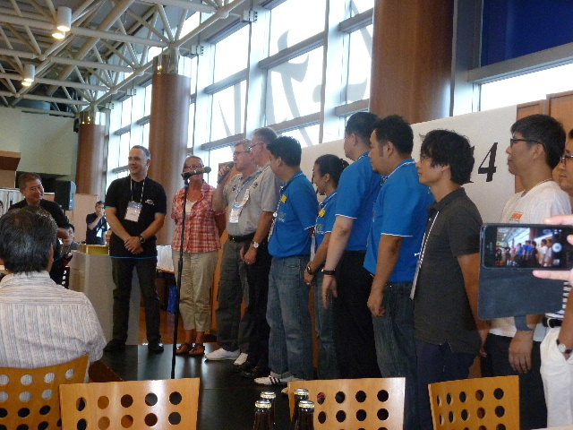
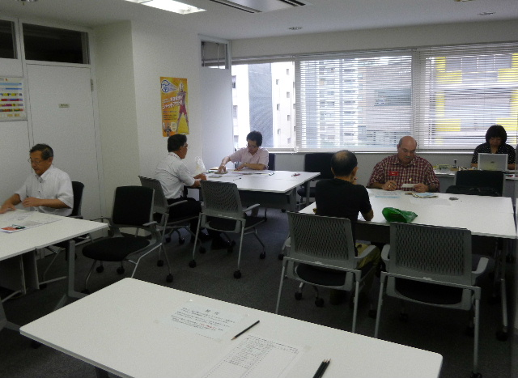

Flash ! DX


|
|
|
|
|
|
|
[Back Issues Aug.2014]
TIME:UTC(JST-09:00)
Report from JA1RJU(PM95sq)
31.Aug.2014(15:00b)
Report from JA1RJU(PM95sq)
30.Aug.2014(15:00c)
VK4RHT/b 09:38- 50.281 CW Beacon
Report from JA1RJU(PM95sq)
29.Aug.2014(15:00b)
Report from JA1RJU(PM95sq)
28.Aug.2014(15:00c)
VK4RHT/b 08:50- 50.281 CW Beacon
Report from JA1RJU(PM95sq)
27.Aug.2014(15:00c)
(JR6YAG/b 09:00- 50.037 CW Beacon Okinawa) Es
(JA6YBR/b 09:25- 50.017 CW Beacon Miyazaki) Es
VK6RSX/b 09:58- 50.304 CW Beacon
Report from JA1RJU(PM95sq)
26.Aug.2014(15:00c)
DU1EV/B 09:00- 50.008 CW Beacon
DU7/PA0HIP 09:05 50.105 CW CQ RST599
DU1ACV 09:22 50.1055 CW
DU7/PA0HIP 09:23 50.110 CW CQ RST599
Report from JA1RJU(PM95sq)
25.Aug.2014(15:00c)
VK4RHT/b 10:00- 50.281 CW Beacon
Report from JA1RJU(PM95sq)
24.Aug.2014(15:00b)
「ハムフェア・2014」(東京有明・東京ビッグサイトで開催=10:00-16:00)
Report from JA1RJU(PM95sq)
23.Aug.2014(15:00b)
「ハムフェア・2014」(東京有明・東京ビッグサイトで開催=10:00-17:00)
|
  混雑する初日の会場   FEDXPのブースで4U1ITUのQSLを発行(左) "SEANET-2014 Bali"のPRで来日したYB1GJS・ Gjellani(右)   会場では”EYE Ball QSO”
  |
Report from JA1RJU(PM95sq)
22.Aug.2014(15:00c)
VK4RHT/b 07:48- 50.281 CW Beacon
Report from JA1RJU(PM95sq)
21.Aug.2014(15:00c)
|
◎ いよいよ今週末（8/23-24日）は東京有明のビックサイトで「ハムフェア・2014」が開催されるが、それに先立って、21/22日の2日間はJARL事務局（6階）でDXCCの新規申請者とエンドーズメントのための「QSLフィルドチェック」が行われる。今年はARRLからW3IZ/ノーム・フサロ氏が来日している。 今年はJARL事務局が、巣鴨から大塚に変わって初の受付だったせいか、初日の午前10時の開始で訪れた申請者は例年よりも少なく、30分後でもチェックに訪れたのは15人程度と寂しいスタートとなった。遠方からの申請者のために郵送での受付も21日まで行われているので事前チェックの数はこれよりも多くなる。 JARL事務局で行われるフィルドチェックは今日、明日の2日間行われ、その後は本番のハムフェアの会場で23/24日の2日間行われる。 新しい受付場所となったJARL事務局はJR大塚駅から徒歩で5-6分の場所で、大塚駅前からビルの上にアンテナ群が見えるので、初めての訪問でも方向は間違う事は無いのだが、事務局のある「ビル」には外部から「JARL」を示す表記が見当たらず、駅から見えていた屋上のアンテナも近くでは見えなくなるので、ビルの入口を探して”うろうろ”する事になる。   |
Report from JA1RJU(PM95sq)
20.Aug.2014(15:00b)
Report from JA1RJU(PM95sq)
19.Aug.2014(15:00b)
Report from JA1RJU(PM95sq)
18.Aug.2014(15:00b)
Report from JA1RJU(PM95sq)
17.Aug.2014(15:00e)
V73SIX/B 00:10- 50.0117 CW Beacon
BV3TO 03:03 50.115 CW
KH0/K6WP 05:13 50.155 CW CQ (OP & QSL JQ1TIV)
V73SIX/B 07:40- 50.0117 CW Beacon
VK8MS 12:35 50.110 CW CQ
Report from JA1RJU(PM95sq)
16.Aug.2014(15:00b)
Report from JA1RJU(PM95sq)
15.Aug.2014(15:00b)
Report from JA1RJU(PM95sq)
14.Aug.2014(15:00c)
NH0J 08:53 50.155 CW CQ
Report from JA1RJU(PM95sq)
13.Aug.2014(15:00d)
VK4WTN 06:41 50.110 CW @ RST599
VK4RHT/b 08:25- 50.281 CW Beacon
DU7/PA0HIP 09:24 50.110 CW CQ
(JR6YAG/b 09:25- 50.037 CW Beacon Okinawa RST599)
NH0J 09:33 50.155 CW @ RST599/599
Report from JA1RJU(PM95sq)
12.Aug.2014(15:00b)
Report from JA1RJU(PM95sq)
11.Aug.2014(15:00b)
Report from JA1RJU(PM95sq)
10.Aug.2014(00:00b)
VK4RHT/b 10:30- 50.281 CW Beacon
|
◎ 日本列島を目前にして、自転車並のゆっくりしたスピードで大東島から奄美諸島沿いにゆっくり北上した台風11号は、九州、四国・高知県を中心に大雨の被害を与えた。台風は、9日に三重県に上陸、10日午後には近畿地方から本州を横断して、敦賀半島から日本海へ抜けた。
関東地方は10日午後から強風圏に入り強風が吹いた。 台風11号は、日本列島に接近してから二週間近く日本近海に居座ったため、九州から北海道までの広範囲に渡り豪雨による被害を与えた。 関東地方では台風が最接近した10日午後から強風の影響を受けたが、心配された最悪の台風の直撃は避けられた。 北関東の一部で強風による被害が出たが、10日の深夜に日本海へと抜けた台風の”吹き返し”による強風の影響は11日まで要注意。 6mのコンデションは、夏場のEsのマルチホップの伝搬も今シーズンは終り、そろそろ秋の気配が現れてきた。夕方にはVK4/VK6のBeaconが毎日聞こえる様になっている。 |
Report from JA1RJU(PM95sq)
09.Aug.2014(15:00b)
Report from JA1RJU(PM95sq)
08.Aug.2014(15:00c)
VK4RTL/b 08:52- 50.282 CW Beacon
VK4RHT/b 09:08- 50.281 CW Beacon
VK6RSX/b 09:34- 50.304 CW Beacon
Report from JA1RJU(PM95sq)
07.Aug.2014(15:00b)
Report from JA1RJU(PM95sq)
06.Aug.2014(15:00b)
VK6RSX/b 10:05- 50.304 CW Beacon
VK4RHT/b 10:10- 50.281 CW Beacon
Report from JA1RJU(PM95sq)
05.Aug.2014(15:00b)
Report from JA1RJU(PM95sq)
04.Aug.2014(15:00b)
Report from JA1RJU(PM95sq)
03.Aug.2014(15:00b)
VK4RHT/b 09:45- 50.281 CW Beacon
Report from JA1RJU(PM95sq)
02.Aug.2014(15:00d)
DU1EV/B 06:20- 50.008 CW Beacon RST599
DU7/PA0HIP 06:46 50.105 CW CQ DX RST599++
(JR6YAG/b 08:27- 50.037 CW Beacon Okinawa RST599)
DU7/PA0HIP 08:49 50.105 CW CQ
Report from JA1RJU(PM95sq)
01.Aug.2014(15:00b)